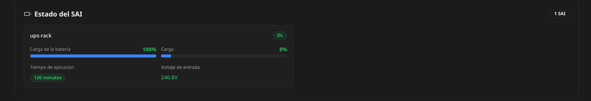

180 s
Tolerancia a microcortes
Durante los primeros tres minutos el servidor sigue trabajando. Si la red vuelve antes del umbral, el temporizador se cancela.
Guía completa, paso a paso y pensada para poder replicarse: la UPS alimenta el rack durante un corte, NUT espera 180 segundos, cancela el apagado si vuelve la energía y, si el corte continúa, ordena detener VM/LXC y apagar Proxmox sin enviar killpower a la UPS.
Una UPS por sí sola sólo mantiene los equipos encendidos durante un tiempo. El problema aparece cuando la batería se agota: si el hypervisor y sus máquinas siguen escribiendo datos, el corte final se parece a desenchufar el servidor. Este diseño transforma ese tiempo de batería en una ventana controlada de apagado.
Durante los primeros tres minutos el servidor sigue trabajando. Si la red vuelve antes del umbral, el temporizador se cancela.
Al vencer el timer se vuelve a consultar ups.status. Sólo si continúa en batería se solicita FSD.
La política deliberada es apagar Proxmox, pero dejar la UPS alimentando otros equipos esenciales.
NUT se ejecuta directamente en el nodo Proxmox. La conexión USB no se pasa a una VM ni a un LXC: el propio hypervisor conserva la autoridad de apagado incluso si un guest falla.
En esta edición pública el hostname real fue reemplazado por nodo-proxmox y el inventario interno se expresa con roles genéricos.
Este simulador es didáctico: acelera 180 segundos para mostrar la lógica sin ejecutar ningún comando real.
OL · contador: 0 s
upssched inicia onbatt-long.upsc ups-rack@localhost ups.status.upsmon -c fsd inicia el apagado coordinado.pve-guests detiene guests en el orden inverso de startup y luego systemctl poweroff apaga el host.upsmon -c fsd, systemctl poweroff, qm stop y cualquier mecanismo de killpower pueden apagar equipos reales. No se deben usar como comandos de consulta.La forma segura de implementar esto es por fases. Primero lectura, después autenticación, luego simulación de shutdown, después temporizador y sólo al final se reemplaza el shutdown simulado por el poweroff real.
case ... esac. Una línea como /usr/sbin/upsmon -c fsd se ejecuta por sí sola aunque el resto del fragmento produzca errores de sintaxis./etc/nut.upsdrvctl shutdown en este diseño.Acceso root, systemd operativo y una ventana de mantenimiento para la prueba final.
Hikvision DS-UPS2000-R conectada directamente al host. En el laboratorio se identificó como 0463:0001 MGE UPS Systems UPS.
apt update
apt install -y nut nut-client nut-server usbutilsPor qué: nut-server aporta upsd; nut-client contiene herramientas como upsc/upsmon; usbutils aporta lsusb.
mkdir -p /root/backup-nut
cp -a /etc/nut /root/backup-nut/nut-$(date +%F-%H%M%S)lsusbID 0463:0001 MGE UPS Systems UPS.nut-scanner -Udriver = "usbhid-ups", vendorid = "0463" y productid = "0001".dmesg -T | grep -Ei 'usb|hid|ups' | tail -n 100/etc/nut/ups.confmaxretry = 3
[ups-rack]
driver = usbhid-ups
port = auto
vendorid = 0463
productid = 0001
sdorder = -1
desc = "Hikvision DS-UPS2000-R Rack"Qué significa cada línea: driver selecciona el controlador; port=auto evita fijar un número de bus USB que puede cambiar; vendor/product limitan el dispositivo esperado; sdorder=-1 refuerza la política de no cortar la UPS.
/etc/nut/nut.confMODE=standaloneEn standalone, driver, servidor NUT y monitor viven en la misma máquina. Para este caso es más simple y reduce dependencias externas.
Un error típico es:
libusb1: Could not open any HID devices: insufficient permissions on everything
No matching HID UPS foundAntes de inventar reglas nuevas, verifica las que ya instala el paquete:
grep -Ri '0463' /usr/lib/udev/rules.d/ /etc/udev/rules.d/ 2>/dev/nullEn el laboratorio ya existía una regla que asociaba 0463:0001 al grupo nut. Se recargó así:
udevadm control --reload-rules
udevadm trigger --subsystem-match=usb --action=change
sleep 3
lsusb | grep 0463Para comprobar el nodo concreto de dispositivo puedes usar ls -l /dev/bus/usb/BBB/DDD después de localizarlo con lsusb. El resultado esperado es grupo nut.
port=auto y los IDs USB.En la instalación original, upsdrvsvcctl list no enumeró correctamente la instancia aunque systemd sí la conocía. Se administró directamente la unidad:
systemctl reset-failed nut-driver@ups-rack.service
systemctl start nut-driver@ups-rack.service
systemctl status nut-driver@ups-rack.service --no-pager -lMensajes de éxito observados:
Using subdriver: MGE HID 1.46
Network UPS Tools - Generic HID driver 0.52 (2.8.1)
USB communication driver (libusb 1.0)
usbhid-ups: Startup successful
Active: active (running)systemctl restart nut-server
systemctl status nut-server --no-pager -l
upsc -l localhost
upsc ups-rack@localhost ups.status| Variable | Qué indica | Uso recomendado |
|---|---|---|
battery.charge | Porcentaje estimado de batería | Observación/alertas, no única condición de shutdown. |
battery.runtime | Segundos estimados de autonomía | Útil como referencia; puede no estar perfectamente calibrado. |
input.voltage | Tensión de entrada | Diagnóstico de red eléctrica. |
output.voltage | Tensión entregada por la UPS | Diagnóstico. |
ups.load | Carga porcentual de la UPS | Dimensionamiento. |
ups.status | OL / OB / FSD y flags adicionales | Variable crítica para decidir. |
Si ProxMenux está instalado, puede mostrar el estado de NUT sin tener que montar Grafana.

Esta es la única captura original incluida porque no expone el hostname ni el inventario del servidor.
NUT necesita una credencial local para que upsmon se autentique contra upsd. No reutilices la contraseña de root ni la de la interfaz web.
MONPASS="$(openssl rand -hex 24)"
printf '%s\n' '[upsmon]' \
" password = $MONPASS" \
' upsmon primary' \
> /etc/nut/upsd.users
chmod 640 /etc/nut/upsd.users
chown root:nut /etc/nut/upsd.usersMONITOR de upsmon.conf. El ZIP público contiene únicamente <PASSWORD_UPSMON>.Antes de permitir un poweroff real, crea un script que sólo escriba en el journal.
cat > /usr/local/sbin/nut-shutdown-sim.sh <<'EOF'
#!/bin/sh
logger -t NUT-SIM "SIMULACION: NUT habria iniciado el apagado de Proxmox"
exit 0
EOF
chown root:nut /usr/local/sbin/nut-shutdown-sim.sh
chmod 750 /usr/local/sbin/nut-shutdown-sim.shupsmon.conf — fase de laboratorioRUN_AS_USER nut
MONITOR ups-rack@localhost 1 upsmon primary
MINSUPPLIES 1
SHUTDOWNCMD "/usr/local/sbin/nut-shutdown-sim.sh"
POLLFREQ 5
POLLFREQALERT 5
HOSTSYNC 15
DEADTIME 15
RBWARNTIME 43200
NOCOMMWARNTIME 300
FINALDELAY 5 nut-monitor debe permanecer estable y una prueba FSD manual debe generar sólo el mensaje NUT-SIM, sin apagar ninguna VM ni el host.upsschedupsmon detecta eventos. upssched aporta memoria temporal: “si sigue en batería dentro de 180 segundos, ejecuta otra acción; si vuelve la luz, cancela”.
cat > /etc/tmpfiles.d/nut-upssched.conf <<'EOF'
d /run/nut/upssched 0750 nut nut -
EOF
systemd-tmpfiles --create /etc/tmpfiles.d/nut-upssched.conf/etc/nut/upssched.confCMDSCRIPT /usr/local/sbin/nut-upssched-cmd
PIPEFN /run/nut/upssched/upssched.pipe
LOCKFN /run/nut/upssched/upssched.lock
AT ONBATT * EXECUTE onbatt
AT ONBATT * START-TIMER onbatt-long 180
AT ONLINE * CANCEL-TIMER onbatt-long
AT ONLINE * EXECUTE online
AT LOWBATT * EXECUTE lowbatt
AT COMMBAD * START-TIMER commbad-long 120
AT COMMOK * CANCEL-TIMER commbad-long
AT COMMOK * EXECUTE commok
AT NOCOMM * EXECUTE nocommupsmonNOTIFYCMD /usr/sbin/upssched
NOTIFYFLAG ONLINE SYSLOG+EXEC
NOTIFYFLAG ONBATT SYSLOG+EXEC
NOTIFYFLAG LOWBATT SYSLOG+EXEC
NOTIFYFLAG COMMBAD SYSLOG+EXEC
NOTIFYFLAG COMMOK SYSLOG+EXEC
NOTIFYFLAG NOCOMM SYSLOG+EXECLa pérdida de comunicación USB no dispara un shutdown automático en esta política: primero se espera 120 s y sólo se registra una alerta. Esto evita apagar por un problema aislado de cable/USB.
Este es el script final usado por la automatización. Su detalle importante es que no confía ciegamente en que el timer venció: vuelve a leer el estado.
#!/bin/sh
ACTION="$1"
UPS="ups-rack@localhost"
case "$ACTION" in
onbatt)
logger -t NUT-SCHED "UPS entro en bateria. Temporizador de seguridad de 180 segundos iniciado."
;;
online)
logger -t NUT-SCHED "Energia restaurada. UPS nuevamente ONLINE."
;;
onbatt-long)
STATUS="$(/usr/bin/upsc "$UPS" ups.status 2>/dev/null || true)"
logger -t NUT-SCHED "Temporizador de 180 segundos cumplido. Estado actual UPS: ${STATUS:-DESCONOCIDO}"
case "$STATUS" in
*OB*)
logger -t NUT-SCHED "UPS sigue en bateria despues de 180 segundos. Solicitando FSD a NUT."
/usr/sbin/upsmon -c fsd
;;
*OL*)
logger -t NUT-SCHED "FSD cancelado: UPS ya esta ONLINE."
;;
*)
logger -t NUT-SCHED "ADVERTENCIA: estado UPS desconocido. No se ejecuta FSD por temporizador."
;;
esac
;;
lowbatt)
logger -t NUT-SCHED "EMERGENCIA: UPS reporta LOWBATT. Solicitando FSD inmediato."
/usr/sbin/upsmon -c fsd
;;
commbad-long)
logger -t NUT-SCHED "ALERTA: comunicacion con UPS perdida durante 120 segundos."
;;
commok)
logger -t NUT-SCHED "Comunicacion con UPS restaurada."
;;
nocomm)
logger -t NUT-SCHED "ALERTA: UPS no disponible para NUT."
;;
*)
logger -t NUT-SCHED "Evento desconocido recibido: $ACTION"
;;
esac
exit 0install -o root -g nut -m 0750 configs/nut-upssched-cmd /usr/local/sbin/nut-upssched-cmd
sh -n /usr/local/sbin/nut-upssched-cmdProxmox usa el startup order para el arranque y detiene en orden inverso. Por eso el componente que debe apagarse al final recibe el número de orden más bajo.
| Orden de arranque | Rol genérico | Timeout | Orden de apagado |
|---|---|---|---|
| 10 | VM de almacenamiento / NAS | 180 s | Último guest |
| 20 | Servicio base 1 | 60 s | 6.º |
| 30 | Servicio base 2 | 60 s | 5.º |
| 40 | Aplicación 1 | 60 s | 4.º |
| 50 | Aplicación 2 | 60 s | 3.º |
| 60 | Proxy / frontend | 60 s | 2.º |
| 70 | Servicio prescindible | 60 s | 1.º |
# EJEMPLOS: reemplaza los placeholders por tus IDs reales.
qm set -startup order=10,up=90,down=180
pct set -startup order=20,up=5,down=60
pct set -startup order=30,up=5,down=60
pct set -startup order=40,up=5,down=60
pct set -startup order=50,up=5,down=60
pct set -startup order=60,up=5,down=60
pct set -startup order=70,up=5,down=60 qm guest cmd ping
qm guest cmd get-osinfo Para una VM de almacenamiento conviene un timeout mayor porque puede necesitar cerrar datasets, servicios y escrituras pendientes antes de apagarse.
Sólo después de superar todas las pruebas simuladas cambia el comando de apagado:
# /etc/nut/upsmon.conf
SHUTDOWNCMD "/usr/bin/systemctl poweroff"Mantén los mismos eventos de upssched. La política queda:
ONBATT → espera 180 s → vuelve a comprobar OB → FSD → apagado.
LOWBATT → FSD inmediato. No se espera el timer.
systemctl restart nut-server
systemctl restart nut-monitor
systemctl is-active nut-driver@ups-rack.service nut-server nut-monitor
upsc ups-rack@localhost ups.status# /etc/nut/upsmon.conf
SHUTDOWNCMD "/usr/bin/systemctl poweroff"
# Deliberadamente NO existe POWERDOWNFLAG
# /etc/nut/ups.conf
sdorder = -1El resultado deseado es que el servidor deje de consumir batería, pero que la UPS siga entregando AC a equipos como router, switch, AP y ONT/módem (si también están conectados a ella).
| Etapa | Esperado | Prohibido / alarma |
|---|---|---|
| Lectura en red | ups.status: OL | Errores USB/driver |
| Microcorte 10–20 s | ONBATT → ONLINE; timer cancelado | FSD |
| Timer de laboratorio | Evento largo → script de simulación | Poweroff real |
| FSD manual con simulación | Journal muestra NUT-SIM | Guests apagados |
| Automático con simulación | OB → timer → OB verificado → FSD → NUT-SIM | Poweroff |
| Producción | 180 s → FSD → guests → host OFF | Killpower de UPS |
journalctl -u nut-monitor -fjournalctl -t NUT-SCHED -fwatch -n 2 'upsc ups-rack@localhost | grep -E "battery.charge|battery.runtime|ups.load|ups.status|input.voltage|output.voltage"'Si tu terminal remota usa un terminfo no instalado en el host, una solución temporal común es:
export TERM=xterm-256colorCon SHUTDOWNCMD todavía apuntando al script de simulación, puede probarse:
runuser -u nut -- /usr/sbin/upsmon -c fsdEl journal debería mostrar que NUT recibió el FSD y ejecutó el shutdown automático, pero en lugar de apagar se ejecutará NUT-SIM.
systemctl stop nut-monitor
rm -f /run/nut/killpower
systemctl restart nut-server
sleep 3
upsc ups-rack@localhost ups.status
# Debe volver a OL si hay red
systemctl restart nut-monitorSHUTDOWNCMD es systemctl poweroff, FSD es una orden de apagado real.| Síntoma | Causa probable | Qué comprobar |
|---|---|---|
insufficient permissions | udev/grupo nut | Reglas, trigger y propietario del dispositivo USB. |
No matching HID UPS found | ID/permiso/driver | 0463:0001, usbhid-ups, cable y udev. |
upsdrvsvcctl ... No service instances | Enumerador NUT/systemd | Usar directamente systemctl status nut-driver@ups-rack.service. |
FSD OL tras una prueba | FSD quedó enclavado en upsd | Detener monitor, reiniciar nut-server, comprobar OL. |
| VM tarda en cerrar | Servicios internos / QGA | QEMU Guest Agent y aumentar timeout down. |
| Servidor no enciende cuando vuelve la luz | La UPS nunca quitó AC | WOL, IPMI/BMC u otro controlador externo. |
systemctl is-active nut-driver@ups-rack.service nut-server nut-monitor
upsc ups-rack@localhost
journalctl -u nut-monitor -n 100 --no-pager
journalctl -t NUT-SCHED -n 100 --no-pager
sh -n /usr/local/sbin/nut-upssched-cmd
qm list
pct listecho "===== TIMER ====="
grep -E 'ONBATT|ONLINE|LOWBATT' /etc/nut/upssched.conf
echo "===== SHUTDOWN ====="
grep -E '^(SHUTDOWNCMD|POWERDOWNFLAG)' /etc/nut/upsmon.conf || true
echo "===== UPS NO KILLPOWER ====="
grep 'sdorder' /etc/nut/ups.conf
echo "===== SCRIPT ====="
sh -n /usr/local/sbin/nut-upssched-cmd && echo "SCRIPT OK"
echo "===== NUT ====="
systemctl is-active nut-driver@ups-rack.service nut-server nut-monitor
echo "===== UPS ====="
upsc ups-rack@localhost ups.statusEsta arquitectura tiene una consecuencia importante: como la UPS no corta físicamente AC a la fuente del servidor, después del poweroff la PSU puede seguir viendo tensión durante todo el apagón. Por tanto, una opción BIOS del tipo “Restore on AC Power Loss” no necesariamente verá una nueva transición de OFF→ON cuando vuelva la red.
Un router, mini-PC u otro equipo que siga encendido puede enviar Wake-on-LAN.
En hardware de servidor, un BMC permite encender el host fuera de banda.
Un dispositivo independiente puede detectar ONLINE y ejecutar la acción de encendido.
Los archivos de configuración son versiones públicas, sin contraseñas ni identificadores internos.
Esta edición fue preparada específicamente para publicación pública.
nodo-proxmox.<PASSWORD_UPSMON>.La implementación de laboratorio que dio origen a esta guía fue validada con NUT 2.8.1 y una Hikvision DS-UPS2000-R. En otras versiones pueden existir diferencias de nombres de servicio o comportamiento; valida siempre en tu propia instalación.